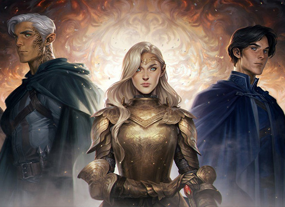
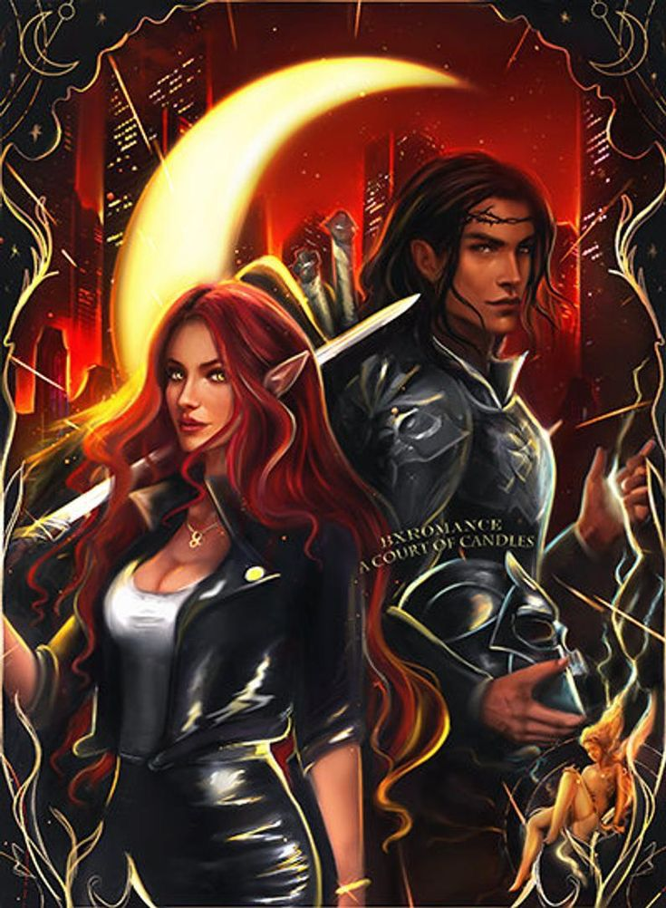

Bienvenidos a Libroverso
Un lugar donde encontraras las mejores reseñas de tus libros favoritos
Trono de Cristal
En un mundo sin magia, y tras un año de trabajos forzados en las minas de sal, una joven asesina es convocada al palacio. Pero ella no acude para acabar con el sanguinario rey que gobierna desde su trono de cristal, sino para conquistar su propia libertad.
Acorta
Feyre, una cazadora de diecinueve años, mata a un lobo en el bosque. Como consecuencia, una criatura monstruosa llega buscando venganza y la arrastra a una tierra encantada que solo conoce a través de las leyendas. Allí descubre que su captor no es un animal, sino Tamlin, uno de los letales fae.
Empireo
Violet Sorrengail creía que se uniría al Cuadrante de los Escribas para vivir una vida tranquila, sin embargo, por órdenes de su madre, debe unirse a los miles de candidatos que, en el Colegio de Guerra de Basgiath, luchan por formar parte de la élite de Navarre: el Cuadrante de los Jinetes de dragones.
Shadowhunters
El día de su cumpleaños, Clary Fray decide visitar un club nocturno junto a su mejor amigo, Simon Lewis; en este, es testigo de cómo un grupo de jóvenes asesinan a alguien. Ella descubre que ellos son cazadores de sombras, seres mitad ángeles y mitad humanos que protegen al mundo cazando demonios, y que ella y su madre también lo son.
Harry Potter

La historia nos narra la vida de Harry J. Potter, quien de bebé sufrió un terrible tragedia, había un terrible mago llamado Lord Voldemort que estuvo aterrorizando al mundo mágico, Voldemort una noche había ido a matar a sus padre (Lily y James Potter) quienes si terminaron muriendo, pero Voldemort al tratar de matar al pequeño Harry su hechizo "Avada Kedavra" no le hizo nada al niño
Los Juegos del Hambre
Es la hora. Ya no hay vuelta atrás. Los juegos van a comenzar. Los tributos deben salir a la Arena y luchar por sobrevivir.Ganar significa Fama y riqueza, perder significa la muerte segura...¡Que empiecen los Septuagésimo Cuartos Juegos del Hambre!
La rebelion de la Reina
Cuando llega su solsticio de verano número diecisiete, Brienna desea solo dos cosas: dominar su pasión y ser elegida por un mecenas. Haber crecido en el reino sureño de Valenia, en la reconocida Casa Magnalia, debería haberla preparado para ello.
Hush Hush
Enamorarse no formaba parte de los planes de Nora Grey. Nunca se había sentido especialmente atraída por sus compañeros de instituto, a pesar de los esfuerzos de su mejor amiga, Vee, para encontrarle una pareja.
Ciudad Medialuna
Bryce Quinlan tenía la vida perfecta, trabajando cada día y saliendo cada noche, hasta que un demonio asesinó a sus amigos y la dejó vacía, herida y sola. Cuando el acusado está entre rejas, pero los crímenes continúan, Bryce hará lo que sea para vengar sus muertes.
Caraval
Scarlett siempre ha vivido en la pequeña isla de Trisda, donde su mayor ilusión es asistir a Caraval, una celebración anual de una semana de duración en la que el público participa de un espectáculo mágico y lleno de aventuras.
Nunca olvidare el primer libro que lei con tan solo 9 años, Los Cinco van de Camping de Enid Blyton. Los Cinco se van de camping y descubren unas vías de tren abandonadas. Hay quien dice que en esa zona hay un tren fantasma. Una noche, los chicos lo ven y deciden investigar en el túnel donde lo han perdido de vista. ¿Trenes fantasmas que se desvanecen en plena noche? Los Cinco no se lo creen: ¡tiene que haber una explicación lógica! Pero a medida que siguen las pistas, se dan cuenta de que definitivamente bajo tierra hay algo escalofriante... ¿Podría el tren fantasma ser real, después de todo?